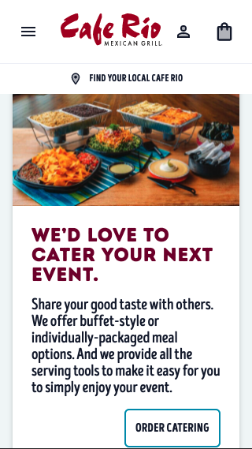
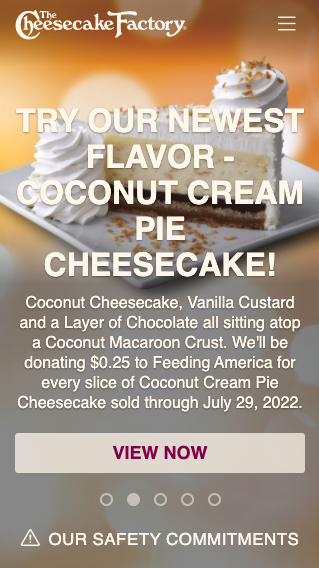
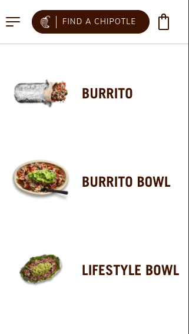

Rule of Thirds
Cafe Rio
caferio.com Cafe Rio was able to use the rule of thirds on their cards as you scroll through their mobile website. Each of their cards has an image taking up the top third of the card and a description taking up the lower two thirds.
Visual Hierarchy
Cafe Rio
cheesecakefactory.com Cheesecake Factory was able to implement visual hierarchy by layering the words, links, and buttons on top of their image, as well as having hierarchy in their background image on their mobile website view.
Repetition
Cafe Rio
chipotle.com Chipotle was able to use repetition in their mobile website by listing out the menu items close to each other, and they used proximity as well to deliver an appealing look.